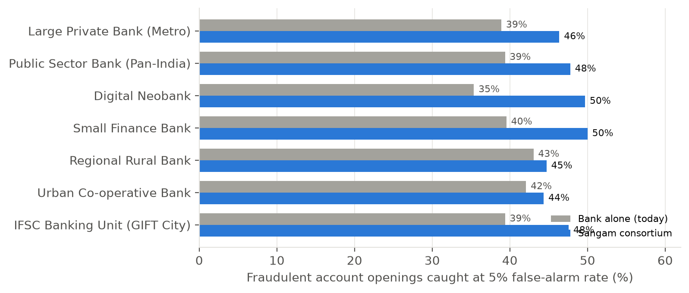
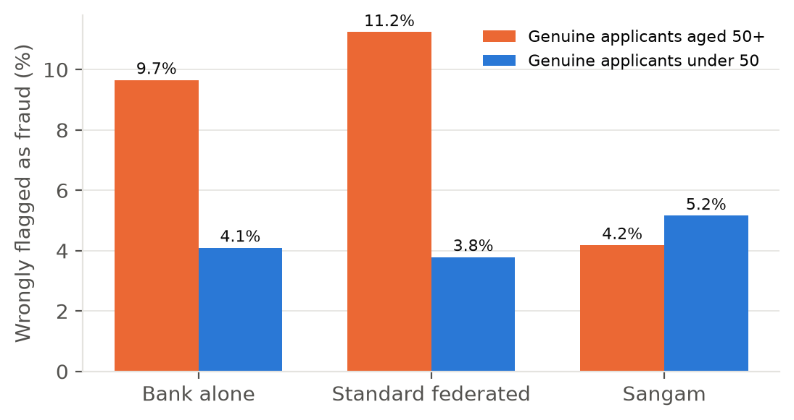
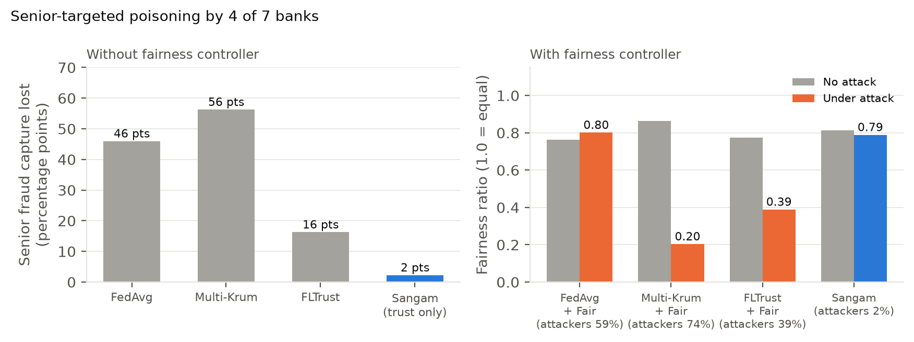
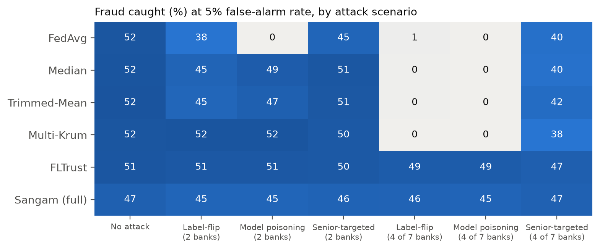

Sangam is a federated AI network for account-opening fraud. Each bank trains on its own data; only model updates travel. A segment-aware trust check keeps compromised participants out, and a fairness controller stops genuine senior citizens from being wrongly flagged.
A fraud ring opens accounts across many banks. Each bank sees only its own slice, small banks have too few fraud examples to learn from, and privacy law rightly prevents pooling customer data. Meanwhile, blunt models hit the wrong people.
RBI's annual report: case count fell, but the amount involved tripled.
RBI Innovation Hub's tool proves AI works, but each bank still models only its own customers.
On the public BAF benchmark, a standard fraud model flags genuine applicants aged 50+ far more often than younger ones. Regulators are already pushing back on blanket freezes of innocent customers' accounts.
Seven simulated Indian banks with different customer mixes, trained for 30 federated rounds on one million real-world-derived bank-account applications. Pick an attack, pick a defence, press play. Every number is replayed from our recorded experiment logs.
Line thickness = share of influence on the shared model. Red = compromised participant.
At a fixed 5% false-alarm budget. Dashed line = the same defence with no attack.
A standard federated round, plus two additions that make it safe to deploy among institutions that do not fully trust each other.
Each bank trains the shared fraud model on its own account-opening data. Raw customer data never leaves the bank, which supports DPDP-style data minimisation.
The consortium operator test-applies every update to a small reference set and measures the effect on each customer segment separately. Updates that harm any segment get zero weight, so poison hidden in a minority segment is caught.
The operator measures false-alarm rates for applicants aged 50+ and under 50, then broadcasts loss weights that push the model toward equal false-alarm rates. This extends our DCA-FW fairness method.
Every round logs each bank's trust score and the fairness gap: a ready-made record for the regulator and a basis for sharing costs and rewards fairly among members.
Bank Account Fraud (BAF) Base, Feedzai, NeurIPS 2022: 1,000,000 applications, 1.1% fraud. Train on months 0–5, test on months 6–7, operating point 5% FPR. Mean ± std over 3 seeds (each seed re-draws bank membership, reference set and initialisation).




IFSCA's 2026 FinTech Sandbox Framework provides an innovation sandbox for testing on data and a regulatory sandbox for live testing. Sangam is designed to walk that path.
Release code and results; mentoring through the Grand Challenge.
Apply to IFSCA's innovation sandbox; replay on historical data from 2–3 IFSC Banking Units.
Sangam scores live applications alongside each bank's existing checks, with no automated action.
Regulatory-sandbox live test; publish fairness and robustness audit reports.
B.Tech CSE, IIT Gandhinagar. Federated-learning fairness research (DCA-FW), semantic retrieval systems, algorithmic-trading backtesting; Barclays Mentorship Programme 2026.
Co-developer.